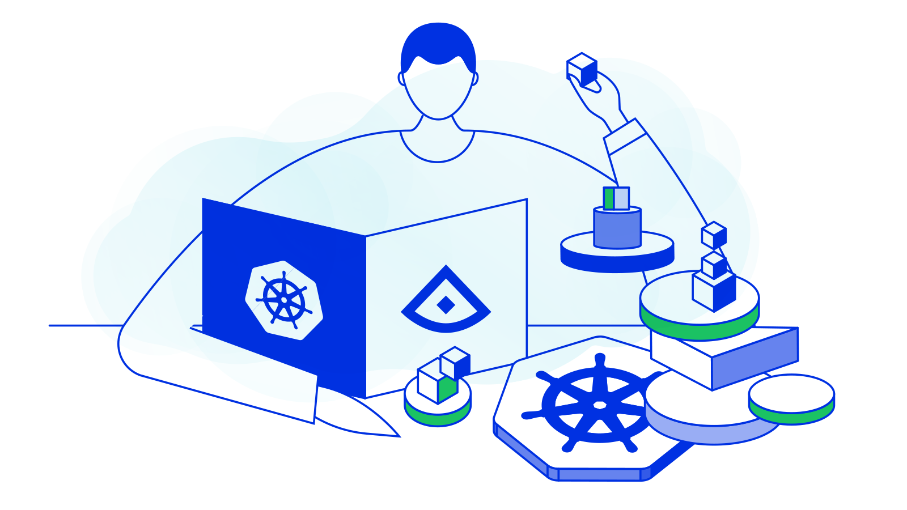

In this tutorial we will learn about Alcide Threat Intelligence Engine.
Alcide Threat Intelligence Engine is a module in Alcide Runtime Security (ART) that monitors your Kubernetes clusters' and autonomously detects and alerts about suspicious communication in runtime, based on traffic to/from IP & DNS with bad reputation.

A concise definition of Threat Intelligence would be, evidence-based knowledge, including context, mechanisms, indicators, implications and actionable advice, about an existing or emerging menace or hazard to assets that can be used to inform decisions regarding the subject's response to that menace or hazard.
Alcide provides out-of-the-box Threat Detection engine equipped with canned analytics and alerts set. Alerts are detected in real-time, allowing Security and DevOps teams to quickly respond and mitigate potential threats.
For this tutorial you will need a Kubernetes cluster with enough permissions to deploy resources into it.
- Install and Set Up kubectl.
- Install Minikube, or any working Kubernetes Cluster
- Alcide Cloud Account

In order to implement Alcide Runtime Security features, we will need to onboard your Kubernetes cluster into your Alcide Cloud Account
- Login to your account: https://yourcompany.cloud.alcide.io
- On the left hand side menu, click on Create Data Center/Cluster
- Follow the steps in the UI wizard.
At this point you should be able to see your cluster, worker nodes, and workloads, in the Infrastructure View and the application components in your Application View

We are going to start with a simple deployment to be run in your cluster.
Let's run the deployment, run this:
cat <<EOF | kubectl apply -f - \
&& kubectl rollout status deployment/cryptominer-demo --watch
apiVersion: apps/v1
kind: Deployment
metadata:
name: cryptominer-demo
labels:
app: alcide-simple-app
spec:
replicas: 1
selector:
matchLabels:
app: alcide-simple-app
template:
metadata:
labels:
app: alcide-simple-app
spec:
containers:
- name: alcide-simple-app
image: busybox
command:
- sh
- "-c"
- 'wget --spider -q https://www.alcide.io &> /dev/null \
&& sleep 3600'
EOF
- Open Alcide Cloud Console,
- Select Application View tab,
- In the top searchbar type cryptominer-demo (wait for a drop list to appear)
- Click on the filter icon on the right side of the drop menu
At this point, you should see the network activity between the pod (microservice) cryptominer-demo we deployed above and *.alcide.io.
If you select, in the right panel, the Alerts tab, there should be no alerts.
Let's introduce this pod with some new legitimate traffic to google.com .
Run the following command:
kubectl exec -it $(kubectl get pods -l app=alcide-simple-app -o custom-columns=:metadata.name --no-headers) -- sh -c "if wget --spider -q https://www.google.com &> /dev/null; then echo OK; else echo Address is not available; fi"
Go back to the Alcide Cloud Console and see the new endpoint shows up

We will now simulate communications from cryptominer-demo to a domain known to be bitcoin related.
In this example pool.bitcoin.com will be used
kubectl exec -it $(kubectl get pods -l app=alcide-simple-app -o custom-columns=:metadata.name --no-headers) -- sh -c "if wget --spider -q https://pool.bitcoin.com &> /dev/null; then echo OK; else echo Address is not available; fi"
The pod cryptominer-demo will communicate only with pool.bitcoin.com
- Open Alcide Cloud Console,
- Select Application View tab,
- In the top searchbar type cryptominer-demo (wait for a drop list to appear)
- Click on the filter icon on the right side of the drop menu
Press the Bell icon at the top right. You should see a new BEHAVIOR ANOMALY alert dubbed as Reputation hit on our cryptominer-demo pod.
In this codelab we covered:
- Alcide Cloud Console Application View
- Alcide Threat Intelligence Engine
- Simulated detection of cryptominer running in your Kubernetes cluster